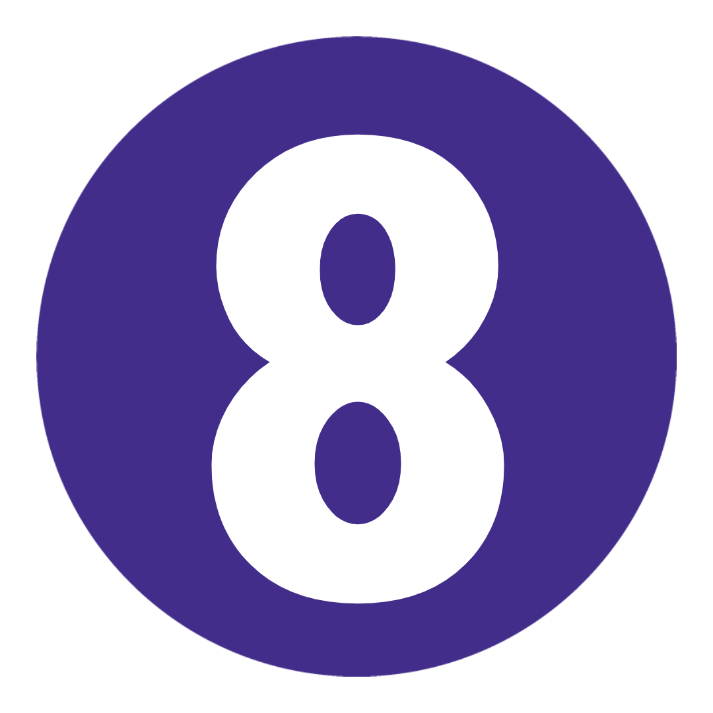
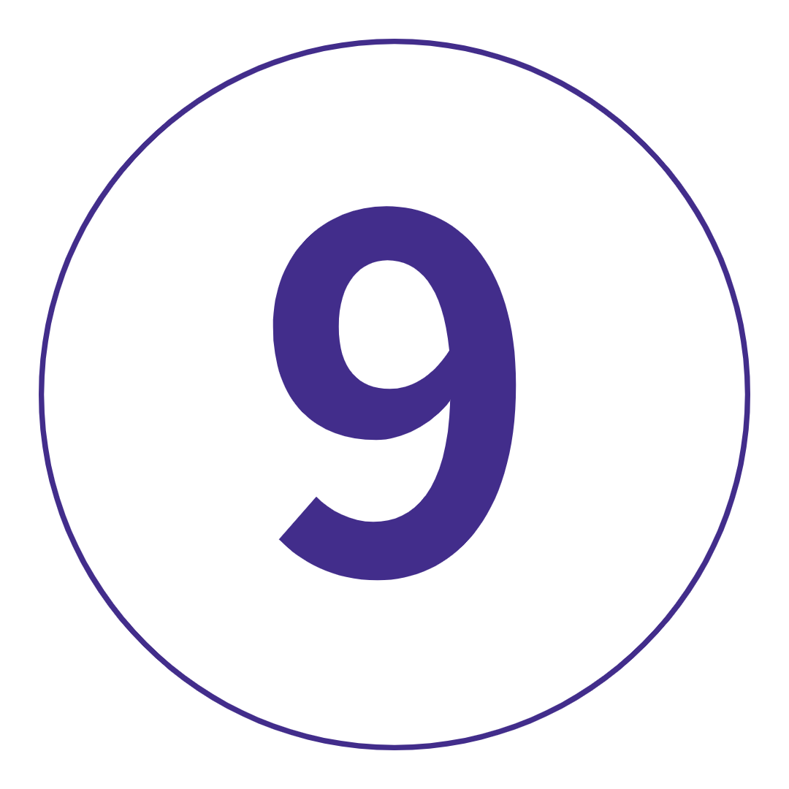
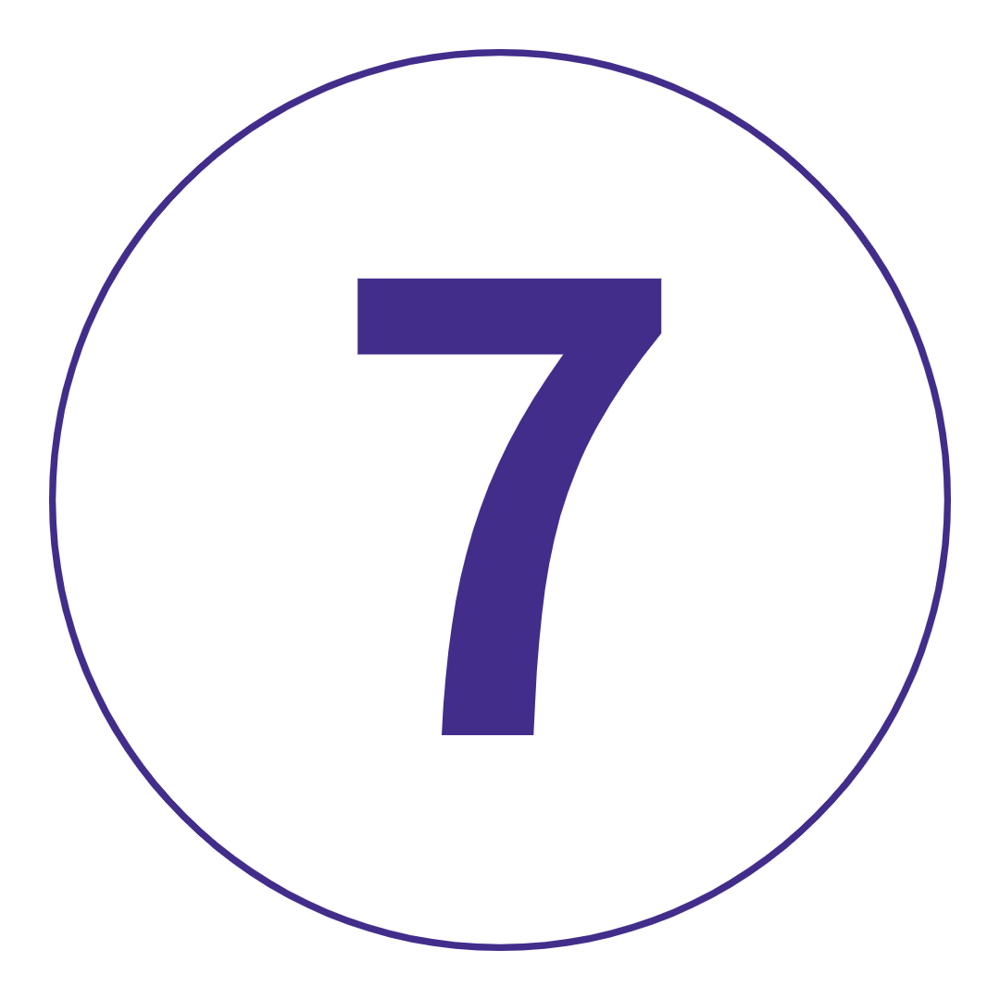

여행 개요
지도
TRIP VIBE = 현지 여행 리더와 함께하는 상징적인 명소와 심도 있는 모험.
스페인과 포르투갈이 제공하는 모든 주요 하이라이트와 더 많은 것을 원하십니까? 내부 가이드에 오신 것을 환영합니다. 리스본에서 바르사까지, 포르투갈의 활기찬 도시의 자갈길 사이에 빠져보세요. 스페인의 미식가 핫스팟을 둘러보세요. 달콤한 와인을 마시며 포르투의 거대한 강을 따라 크루즈를 즐겨보세요. 그리고 Sintra와 Zaragoza의 숨겨진 역사적 보석을 발견하십시오. 표면을 훑어보는 것은 잊어버리세요.
이것이 진정한 거래입니다.
여행 일정
-
 포르투갈 리스본
역사. 문화. 음식. 그리고 심각하게 전리품을 타는 언덕. 호텔에 짐을 버리고 동료 탐험가들에게 '올라'라고 말한 후 이 전기 도시를 드라이브하면서 리스본의 A급 명소를 둘러보세요. 그리고 오늘 밤? 우리는 저녁 식사와 전통적인 파두 쇼가 포함된 포르투갈 유산으로 먼저 뛰어들고 있습니다. Fado 음악(매우 열정적인 민요)은 19세기에 리스본에서 태어났기 때문에 이보다 더 좋은 경험은 없습니다. 편안히 앉아서 모든 것이 가라앉게 놔두세요. 당신이 정말 여기 있습니다.
포르투갈 리스본
역사. 문화. 음식. 그리고 심각하게 전리품을 타는 언덕. 호텔에 짐을 버리고 동료 탐험가들에게 '올라'라고 말한 후 이 전기 도시를 드라이브하면서 리스본의 A급 명소를 둘러보세요. 그리고 오늘 밤? 우리는 저녁 식사와 전통적인 파두 쇼가 포함된 포르투갈 유산으로 먼저 뛰어들고 있습니다. Fado 음악(매우 열정적인 민요)은 19세기에 리스본에서 태어났기 때문에 이보다 더 좋은 경험은 없습니다. 편안히 앉아서 모든 것이 가라앉게 놔두세요. 당신이 정말 여기 있습니다.
키워드 공식 만찬 + 리스본 하이라이트 드라이브 + 전통 파두 쇼 리스본
오늘은 당신의 날, 당신의 방식입니다. 그 버킷리스트 항목을 체크하고 뒷골목을 탐험하는 자유 시간을 보내십시오. 군중을 피하고 리스본의 유명한 노란색 28 트램을 타기 위해 일찍 일어나십시오. Alfama(리스본에서 가장 오래된 이웃)인 구불구불한 중세 미로를 확인하십시오. 무어 문화에 대한 장엄한 전망과 역사 수업을 위해 상 조르제 성(São Jorge Castle)까지 가십시오. Mouraria에서 다채로운 거리 예술을 확인하십시오. 그런 다음 pasteis de nata(폭식할 만한 커스터드 타르트)를 먹고 식물원에서 휴식을 취하십시오. 사실: 이 곳은 세계의 모든 종류의 식물 중 하나를 원했던 포르투갈 왕에 의해 지어졌습니다. 오늘 밤 저녁 식사가 준비되어 있지만 타임 아웃 마켓으로 가시면 군침이 도는 음식을 찾으실 수 있습니다. 그런 다음: Bairro Alto의 아늑한 옥상 와인 바에서 긴장을 푸십시오. 이것이 당신이 온 이유입니다.
리스본
오늘은 당신의 날, 당신의 방식입니다. 그 버킷리스트 항목을 체크하고 뒷골목을 탐험하는 자유 시간을 보내십시오. 군중을 피하고 리스본의 유명한 노란색 28 트램을 타기 위해 일찍 일어나십시오. Alfama(리스본에서 가장 오래된 이웃)인 구불구불한 중세 미로를 확인하십시오. 무어 문화에 대한 장엄한 전망과 역사 수업을 위해 상 조르제 성(São Jorge Castle)까지 가십시오. Mouraria에서 다채로운 거리 예술을 확인하십시오. 그런 다음 pasteis de nata(폭식할 만한 커스터드 타르트)를 먹고 식물원에서 휴식을 취하십시오. 사실: 이 곳은 세계의 모든 종류의 식물 중 하나를 원했던 포르투갈 왕에 의해 지어졌습니다. 오늘 밤 저녁 식사가 준비되어 있지만 타임 아웃 마켓으로 가시면 군침이 도는 음식을 찾으실 수 있습니다. 그런 다음: Bairro Alto의 아늑한 옥상 와인 바에서 긴장을 푸십시오. 이것이 당신이 온 이유입니다. 리스본에서 포르투까지 신트라 경유
포르투가 무엇으로 유명한지 짐작할 수 없습니다. 하지만 당신의 내면의 와인 감정가가 너무 흥분하기 전에 – 우리는 동화 같은 마을인 신트라에 들를 것입니다. 무어의 성(Castle of the Moors)과 테크니컬러 페나 팰리스(Pena Palace)와 같은 영광스러운 유네스코 세계 문화 유산에 등재된 도시를 둘러볼 수 있는 충분한 자유 시간이 있을 것입니다(pssst 사전 예약). 잠시 시간을 내어 Fábrica das Verdadeiras Queijadas da Sapa에 들르십시오. 1756년부터 queijadas(좋은 음식으로 가득 찬 작은 페이스트리)를 제공하고 있습니다. 그런 다음: 저녁 시간에는 미로에 빠져 길을 잃을 수있는 포르투로 이동합니다. 자갈길과 멋진 파란색 타일 건물.
리스본에서 포르투까지 신트라 경유
포르투가 무엇으로 유명한지 짐작할 수 없습니다. 하지만 당신의 내면의 와인 감정가가 너무 흥분하기 전에 – 우리는 동화 같은 마을인 신트라에 들를 것입니다. 무어의 성(Castle of the Moors)과 테크니컬러 페나 팰리스(Pena Palace)와 같은 영광스러운 유네스코 세계 문화 유산에 등재된 도시를 둘러볼 수 있는 충분한 자유 시간이 있을 것입니다(pssst 사전 예약). 잠시 시간을 내어 Fábrica das Verdadeiras Queijadas da Sapa에 들르십시오. 1756년부터 queijadas(좋은 음식으로 가득 찬 작은 페이스트리)를 제공하고 있습니다. 그런 다음: 저녁 시간에는 미로에 빠져 길을 잃을 수있는 포르투로 이동합니다. 자갈길과 멋진 파란색 타일 건물.
키워드 아침밥 + 신트라 방문 포르투
좀 더 깊이 탐구할 시간입니다. Nike의 끈을 묶고 포르투의 중세 거리, 기발한 골목길, 그림 같은 항구를 도보 여행으로 둘러보겠습니다. 포르투 대성당을 지나갑니다. Palácio da Bolsa의 Gape. 샌프란시스코 교회에서 받은 축복을 세어 보십시오. 그리고 산 벤토 역에서 손으로 그린 아줄레호스(다채로운 타일)를 확인하세요. 그런 다음: 나머지는 여러분에게 달려 있습니다. 하지만 우리는 오후를 보내기에 가장 좋은 방법은 거대한 도우로 강을 따라 내려가는 선택적인 크루즈라고 생각합니다. 또는 Matosinhos 해변으로 가서 유럽의 선탠 라인을 작업할 수 있습니다. 나중에 포함된 포트 와인 시음 경험으로 미뢰를 자극하고 모든 전망을 감상할 수 있는 지역 옥상 바 중 한 곳을 방문하십시오 (최고 팁: 화이트 포트와 토닉 *셰프의 키스* 요청).
포르투
좀 더 깊이 탐구할 시간입니다. Nike의 끈을 묶고 포르투의 중세 거리, 기발한 골목길, 그림 같은 항구를 도보 여행으로 둘러보겠습니다. 포르투 대성당을 지나갑니다. Palácio da Bolsa의 Gape. 샌프란시스코 교회에서 받은 축복을 세어 보십시오. 그리고 산 벤토 역에서 손으로 그린 아줄레호스(다채로운 타일)를 확인하세요. 그런 다음: 나머지는 여러분에게 달려 있습니다. 하지만 우리는 오후를 보내기에 가장 좋은 방법은 거대한 도우로 강을 따라 내려가는 선택적인 크루즈라고 생각합니다. 또는 Matosinhos 해변으로 가서 유럽의 선탠 라인을 작업할 수 있습니다. 나중에 포함된 포트 와인 시음 경험으로 미뢰를 자극하고 모든 전망을 감상할 수 있는 지역 옥상 바 중 한 곳을 방문하십시오 (최고 팁: 화이트 포트와 토닉 *셰프의 키스* 요청).
키워드 트립 리더와 함께하는 포르투 도보 여행 + 포트 와인 시음 체험
추가 옵션 Douro 강 유람선: €15부터 포르투에서 마드리드, 스페인
오늘은 Picasso, Dalí, Miró 및 기타 부러워할 만한 창의적인 예술가들의 오랜 고향인 마드리드로 향합니다. 우리가 여러분을 찾아갑니다. 사실에 입각한 여행 리더는 왕궁, 데보드 사원, 마요르 광장, 산 미구엘 시장 등을 둘러보는 드라이브 투어를 통해 스페인 수도에 대해 더 잘 알게 될 것입니다. 그때? 현지 음식을 찾을 시간: Lavapiés 지역의 예술적인 카페 중 한 곳을 방문하여 문화적 테마를 계속 유지하십시오. 그리고 나중에: 갱단을 모아 트렌디한 Chueca에서 d층을 치십시오.
포르투에서 마드리드, 스페인
오늘은 Picasso, Dalí, Miró 및 기타 부러워할 만한 창의적인 예술가들의 오랜 고향인 마드리드로 향합니다. 우리가 여러분을 찾아갑니다. 사실에 입각한 여행 리더는 왕궁, 데보드 사원, 마요르 광장, 산 미구엘 시장 등을 둘러보는 드라이브 투어를 통해 스페인 수도에 대해 더 잘 알게 될 것입니다. 그때? 현지 음식을 찾을 시간: Lavapiés 지역의 예술적인 카페 중 한 곳을 방문하여 문화적 테마를 계속 유지하십시오. 그리고 나중에: 갱단을 모아 트렌디한 Chueca에서 d층을 치십시오.
키워드 아침밥 + 마드리드 하이라이트 드라이브 마드리드
탐험에 더 많은 시간을 내고 싶었습니다. 그래서 우리가 더 일찍 준비한 자유일입니다. 가서 받아. 유럽에서 가장 오래된 군주국 중 하나인 왕궁을 방문해 보세요. 광활한 마요르 광장을 거닐어 보세요. Calle de Cave Baja를 따라 타파스를 해결하십시오. Museo del Prado(마드리드의 루브르 박물관이라고도 함)에서 걸작을 감상하세요. Palacio de Cibeles에서 모든 전망을 감상하세요. 츄러스를 들고 엘 레티로 공원을 산책하세요. 옵션으로 제공되는 음식 투어도 있습니다. 그런 다음: 독특한 성격과 도발적인 과거가 있는 트렌디한 지역인 Malasaña 지역에서 저녁 식사를 위해 북적이는 비스트로를 찾아보세요. 초콜릿으로 덮인 츄로스 2라운드를 먹을 준비가 되셨나요? 여기에는 판단이 없습니다.
마드리드
탐험에 더 많은 시간을 내고 싶었습니다. 그래서 우리가 더 일찍 준비한 자유일입니다. 가서 받아. 유럽에서 가장 오래된 군주국 중 하나인 왕궁을 방문해 보세요. 광활한 마요르 광장을 거닐어 보세요. Calle de Cave Baja를 따라 타파스를 해결하십시오. Museo del Prado(마드리드의 루브르 박물관이라고도 함)에서 걸작을 감상하세요. Palacio de Cibeles에서 모든 전망을 감상하세요. 츄러스를 들고 엘 레티로 공원을 산책하세요. 옵션으로 제공되는 음식 투어도 있습니다. 그런 다음: 독특한 성격과 도발적인 과거가 있는 트렌디한 지역인 Malasaña 지역에서 저녁 식사를 위해 북적이는 비스트로를 찾아보세요. 초콜릿으로 덮인 츄로스 2라운드를 먹을 준비가 되셨나요? 여기에는 판단이 없습니다.
추가 옵션 마드리드 음식 투어: €50부터 마드리드에서 세고비아를 거쳐 산세바스티안으로
다음: 산 세바스티안. 가는 길에 스페인 내전에서 전사한 이들을 추모하는 몰락자의 계곡(Valley of the Fallen)을 지나게 됩니다. 그런 다음: 세계 유산에 등재된 세고비아로 들어가 수로, 대성당, 디즈니와 같은 알카사르 데 세고비아 성을 둘러보세요. 오늘 점심은 우리의 책임입니다. 우리는 cochinillo asado와 함께 전체 돼지(말 그대로)를 갑니다. 새끼 돼지 구이, 진지한 Game of Thrones 연회 분위기를 풍기는 지역 특산품입니다. 왕처럼 식사를 마치면 다시 코치로 돌아옵니다. 해변가의 산세브가 부르고 있습니다. 어두워진 후 최고의 분위기를 즐기려면 Plaza de la Constitució를 향해 일직선으로 가십시오. 뭐. 하루.
마드리드에서 세고비아를 거쳐 산세바스티안으로
다음: 산 세바스티안. 가는 길에 스페인 내전에서 전사한 이들을 추모하는 몰락자의 계곡(Valley of the Fallen)을 지나게 됩니다. 그런 다음: 세계 유산에 등재된 세고비아로 들어가 수로, 대성당, 디즈니와 같은 알카사르 데 세고비아 성을 둘러보세요. 오늘 점심은 우리의 책임입니다. 우리는 cochinillo asado와 함께 전체 돼지(말 그대로)를 갑니다. 새끼 돼지 구이, 진지한 Game of Thrones 연회 분위기를 풍기는 지역 특산품입니다. 왕처럼 식사를 마치면 다시 코치로 돌아옵니다. 해변가의 산세브가 부르고 있습니다. 어두워진 후 최고의 분위기를 즐기려면 Plaza de la Constitució를 향해 일직선으로 가십시오. 뭐. 하루.
키워드 아침밥 + 점심 + 타락한 계곡 방문 + 트립리더와 함께하는 세고비아 오리엔테이션 워크 산세바스티안
스누즈는 잊어버리세요. 이 바스크어 핫스팟은 탐험을 요청합니다. 시내를 돌아다니는 오리엔테이션 산책에 대해 알아보세요. 우리의 잘 아는 Trip Leader인 DW가 가는 길에 최고의 pintxos 장소를 알려줄 것입니다. 그러면 나머지는 당신에게 달려 있습니다. La Concha에서 해변을 찾는 사람들과 함께하십시오. 현지인들과 함께 서핑을 즐겨보세요. 세계에서 가장 오래된 테마파크 중 한 곳에서 놀이기구를 타보세요. 또는 Urgull Hill에서 시원한 맥주를 마시며 만의 멋진 전망을 감상해 보세요. 나중에, 현명하게 바지를 선택하십시오. 오늘 밤 구시가지에서 핀초바 크롤링을 시작하거나 천천히 구운 쇠고기(입에서 녹는 음식)를 먹으러 Bar Borda Berri로 향한다면, 많은 공간이 필요합니다.
키워드 트립 리더와 함께하는 산세바스티안 오리엔테이션 워크 산세바스티안에서 사라고사 경유 바르셀로나
빠른 계산: 오늘이 마지막 하루입니다. 따라서 매초를 계산하십시오. 스페인에서 가장 과소평가된 도시 중 하나인 사라고사(Zaragoza)에 잠시 들러보겠습니다. 인상적인 누에스트라 세뇨라 델 필라르 대성당(Basílica de Nuestra Señora del Pilar)을 확인하고 고대 로마 성벽을 지나 산책하며 유서 깊은 중앙 시장(Central Market)에서 식사를 즐겨보세요. 그 후, 우리는 갱단과 저녁 식사를 하기 전에 드라이브 투어로 Barça를 돌아볼 것입니다. 샹그리아 한 잔을 들고 환호를 받으십시오. 이것은 하나의 놀라운 모험이었습니다.
산세바스티안에서 사라고사 경유 바르셀로나
빠른 계산: 오늘이 마지막 하루입니다. 따라서 매초를 계산하십시오. 스페인에서 가장 과소평가된 도시 중 하나인 사라고사(Zaragoza)에 잠시 들러보겠습니다. 인상적인 누에스트라 세뇨라 델 필라르 대성당(Basílica de Nuestra Señora del Pilar)을 확인하고 고대 로마 성벽을 지나 산책하며 유서 깊은 중앙 시장(Central Market)에서 식사를 즐겨보세요. 그 후, 우리는 갱단과 저녁 식사를 하기 전에 드라이브 투어로 Barça를 돌아볼 것입니다. 샹그리아 한 잔을 들고 환호를 받으십시오. 이것은 하나의 놀라운 모험이었습니다.
키워드 아침밥 + 공식 만찬 + 사라고사 방문 + 바르셀로나 하이라이트 드라이브 바르셀로나
우리는 깊이 파고들었다. 우리는 더 많은 것을 경험했습니다. 그리고 이제 작별인사를 할 시간입니다(우린 울고 있는 것이 아닙니다, 당신은 울고 있습니다). 그 사교를 교환하고 동창회 여행을 계획하십시오. 내년 라운드 2는 누구입니까?
바르셀로나
우리는 깊이 파고들었다. 우리는 더 많은 것을 경험했습니다. 그리고 이제 작별인사를 할 시간입니다(우린 울고 있는 것이 아닙니다, 당신은 울고 있습니다). 그 사교를 교환하고 동창회 여행을 계획하십시오. 내년 라운드 2는 누구입니까?
포함된 항목
포함된 경험
숙소
교통
리스본 하이라이트 드라이브
저녁 식사와 함께하는 전통 파두 쇼
신트라 방문
트립 리더와 함께하는 포르투 도보 여행
포트 와인 시음 체험
마드리드 하이라이트 드라이브
타락한 계곡 방문
트립리더와 함께하는 세고비아 오리엔테이션 워크
트립 리더와 함께하는 산세바스티안 오리엔테이션 워크
사라고사 방문
바르셀로나 하이라이트 드라이브
호텔 스타일의 숙박 시설에서 9박(트윈 또는 더블)
에어컨 코치 선택 활동
- 도우로 강 유람선: €15부터
- 마드리드 음식 투어: €50부터
투어 동영상, 사진, 리뷰
10 일
2 국가
1 인당
US $ 2,089.00 부터

여행 코드: TSPXB2
여행 노트 다운로드-
날짜 및 가격 확인
2022년 4월 4월 24일 일 ~ 5월 3일 화 딥 딥: 스페인 및 포르투갈 2022 US$2,089.00 2022년 5월 5월 15일 일 ~ 5월 24일 화 딥 딥: 스페인 및 포르투갈 2022 US$2,109.00 2022년 6월 6월 5일 일 ~ 6월 14일 화 딥 딥: 스페인 및 포르투갈 2022 US$2,319.00 6월 26일 일 ~ 7월 5일 화 딥 딥: 스페인 및 포르투갈 2022 US$2,319.00 2022년 7월 7월 17일 일 ~ 7월 26일 화 딥 딥: 스페인 및 포르투갈 2022 US$2,329.00
여행개요 |
|
|  밤 |  식사 |
 최대 인원 최대 인원 |
|
| 시 작 | 16 : 00 리스본 |
| 종 료 | 09 : 00 바르셀로나 |